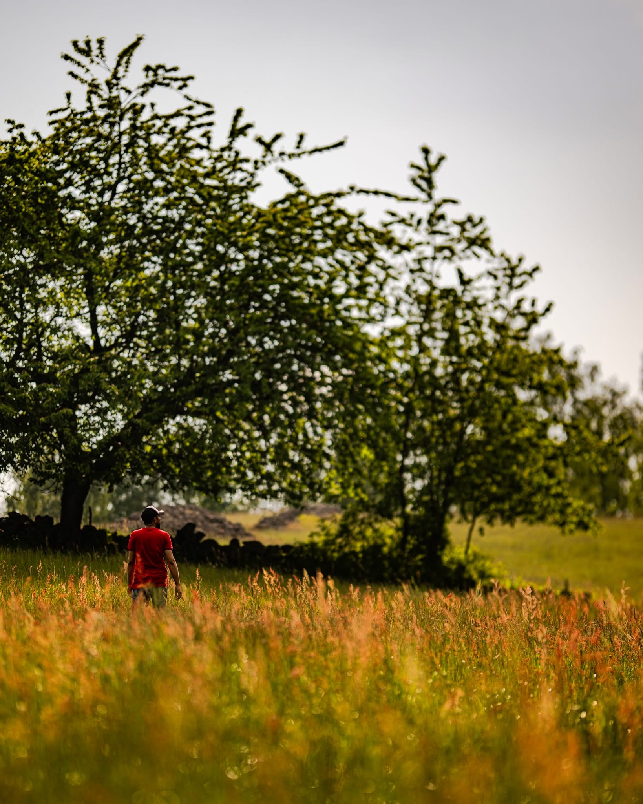

Mostafa Mohseni, me-sida i databas-kursen

Detta är min me-sida i kursen. Denna sidan innehåller en presentation av mig själv.
Mitt namn är Mostafa, och jag har bott i Karlskrona sedan 2016, efter att ha flyttat från Iran. Jag är 23 år gammal och bor fortafarande hemma med min familj.
Efter att jag tog studenten år 2020 har jag jobbat inom olika områden. Jag har bland annat jobbat som distributör, tolk, idrottsledare, kock, montör inom industrin samt järnvägsunderhåll.
För närvarande studerar jag mitt första år på Software Engineering programmet. Mitt intresse för programmering väcktes redan i barndomen genom en TV-serie om en hacker. Nu, flera år senare har jag fått möjligheten att utforska denna bransch.
När det gäller sport är volleyboll min favorit. När jag har tid över tycker jag om att promenera, åka på utflykter och tillbringa tid i naturen, där jag gärna gör upp en eld och njuter av omgivningen.
Du hittar mig på LinkedIn: Seyed Mostafa Mohseni
"Döm inte allt du ser, tro inte allt du hör och säg inte allt du vet."